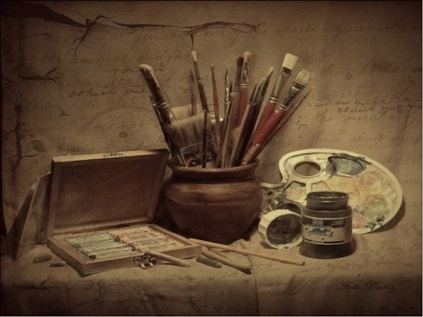

Главная
Что такое искусство?
 Изобразительное искусство — род искусства и художественного творчества, предметом которого является материализация зрительных (визуальных) образов материальной действительности и через эти образы — духовной реальности. В иной формулировке: способ, процесс и результат выражения человеческого, духовного содержания через материальную форму изображаемых объектов.
Цель искусства — раскрыть в явлениях окружающей жизни их подлинную сущность, наглядно показать во впечатляющих образах самое важное для человека и общества. Одним из главных художественных приемов служит обобщение образа, его типизация. Она позволяет ярко показать прекрасное в жизни, обнажить безобразное, злое. Искусство каждой эпохи неразрывно связано с национальной культурой и историческими условиями, с классовой борьбой, с уровнем духовной жизни общества. Признаки искусства – это творческое воспроизведение жизни в художественном виде.
Изобразительное искусство отражает реальность при помощи визуальных образов, отождествляя собой разнообразие и множество сторон окружающего мира, идеи и чувства человека. Творчество является непосредственным способом познания и проявления себя и окружающего мира. Например, художник для этого применяет собственное воображение.
Качества, которыми обладает творчество:
- Чувства — через них создаются и воспринимаются художественные произведения;
- Образы – изучение и форма познания мира передается в виде образов, отношение к реальности через творчество;
- Субъективность – точное отражение мастером действительности;
- Законченность – авторские работы обычно выстроены композиционно.
Искусство – это отражение творчества и души, способ запечатлевать, воспроизводить мысли, фантазии и действительность, требующее особого мастерства, это душа человечества. Искусство в жизни человека занимает одну из лидирующих позиций. Искусство является одним из главных способов проявить себя, оно формирует внутренний мир человека, духовные ценности, наполняет жизнь. Им можно выразить и описать свои эмоции, чувства, побудить к действию и развитию.
Психология искусства рассматривает то, каким образом создание и восприятие произведений влияет на жизнь человека. Она исследует мотивы, побуждающие творить, сам процесс, способности автора, его чувства и переживания во время создания произведения.